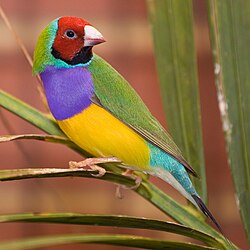
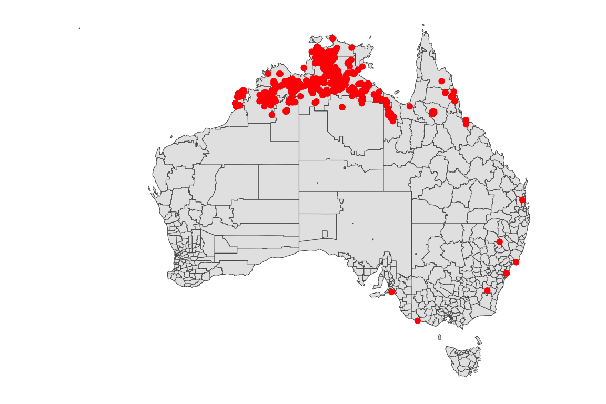
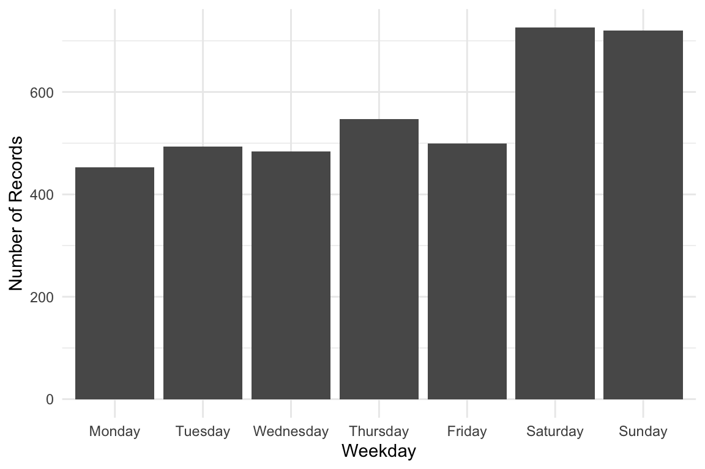
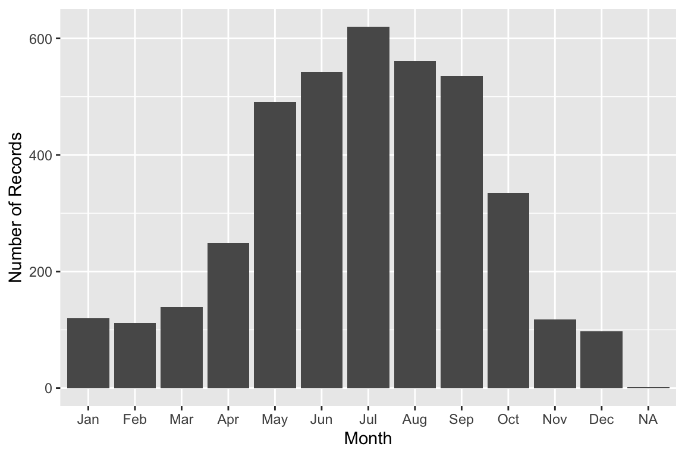
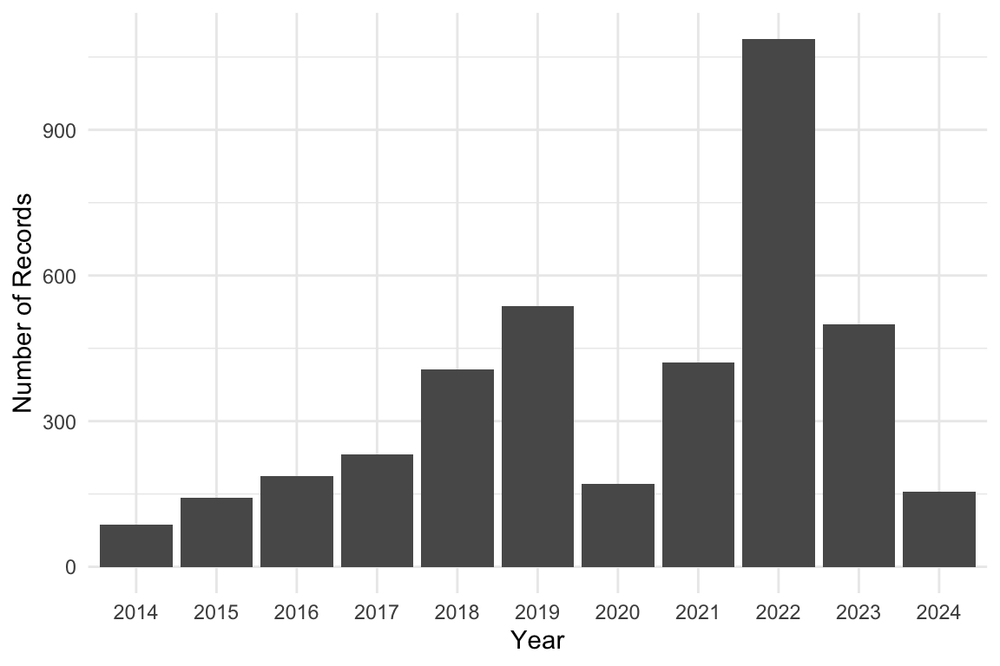
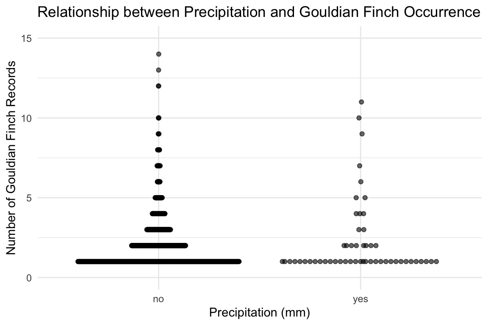

Rows: 3,922
Columns: 14
$ obs_lat <dbl> -38.28428, -35.54665, -35.41374, -33.76889, -33.76889, -33…
$ obs_lon <dbl> 141.6337, 138.8717, 149.0669, 151.1119, 151.1119, 151.1119…
$ date <date> 2015-01-25, 2021-01-03, 2016-12-13, 2014-04-24, 2014-04-2…
$ time <chr> "15:15:00", "15:01:16", "10:30:00", "00:00:00", "00:00:00"…
$ year <dbl> 2015, 2021, 2016, 2014, 2014, 2014, 2017, 2017, 2017, 2014…
$ month <dbl> 1, 1, 12, 4, 4, 4, 1, 2, 2, 12, 5, 4, 4, 4, 4, 5, 4, 6, 6,…
$ day <dbl> 25, 3, 13, 24, 24, 24, NA, 17, 9, 10, 28, 27, 26, 17, 23, …
$ hour <int> 15, 15, 10, 0, 0, 0, 0, 15, 14, 13, 15, 6, 6, 6, 6, 6, 8, …
$ weekday <ord> Sunday, Sunday, Tuesday, Thursday, Thursday, Thursday, Sun…
$ dayofyear <dbl> 25, 3, 348, 114, 114, 114, 1, 48, 40, 344, 148, 118, 117, …
$ sci_name <chr> "Chloebia gouldiae", "Chloebia gouldiae", "Chloebia gouldi…
$ record_type <chr> "HUMAN_OBSERVATION", "HUMAN_OBSERVATION", "HUMAN_OBSERVATI…
$ obs_state <chr> "Victoria", "South Australia", "Australian Capital Territo…
$ ws_id <chr> "948280-99999", "946770-99999", "949250-99999", "957650-99…
Photo by Kym Nicolson. Licensed under CC BY 4.0.
1 Introduction
This vignette guides you through the process of reproducing and analyzing occurrence data for the Gouldian Finch in Australia. The data is sourced from the Atlas of Living Australia (ALA), cleaned, enriched with weather information, and visualized.
This is the glimpse of your data :
2 Visualization
2.1 Spatial Distribution Map
Distribution of Occurrence Gouldian Finch Sightings in Australia
library(ggplot2)
library(ggthemes)
gouldian_finch |>
ggplot() +
geom_sf(data = oz_lga) +
geom_point(aes(x = obs_lon, y = obs_lat), color = "red") +
theme_map()
3 Weekly, Monthly, and Yearly Trends
Weekday Distribution of Gouldian Finch Sightings
week_order <- c("Monday", "Tuesday", "Wednesday", "Thursday", "Friday", "Saturday", "Sunday")
gouldian_finch |>
ggplot(aes(x = factor(weekday, levels = week_order))) +
geom_bar() +
labs(x = "Weekday", y = "Number of Records") +
theme_minimal()
Monthly Distribution of Gouldian Finch Sightings
gouldian_finch |>
dplyr::mutate(month = lubridate::month(month, label = TRUE, abbr = TRUE)) |>
ggplot(aes(x = factor(month))) +
geom_bar() +
labs(x = "Month", y = "Number of Records") 
Yearly Distribution of Gouldian Finch Sightings
gouldian_finch |>
ggplot(aes(x = factor(year))) +
geom_bar() +
labs(x = "Year", y = "Number of Records")
We want to see if gouldian_finch occurrences are related to precipitation on the same day from the weather dataset.
Here’s a short R script that:
Joins
gouldian_finchwith weather_data usingws_idanddate.Counts daily occurrences.
Plots precipitation vs number of
gouldian_finchsightings.
library(dplyr)
library(ggplot2)
library(ecotourism)
library(ggbeeswarm)
# Prepare gouldian_finch occurrence counts per day
gouldian_finch_daily <- gouldian_finch %>%
group_by(ws_id, date) %>%
summarise(occurrence = n(), .groups = "drop")
# Join with weather data for precipitation
gouldian_finch_weather <- gouldian_finch_daily %>%
left_join(weather_data %>% select(ws_id, date, prcp),
by = c("ws_id", "date"))
# Simple scatter plot: precipitation vs gouldian_finch occurrence
gouldian_finch_weather |>
filter(!is.na(prcp)) |>
mutate(rain = if_else(prcp > 5, "yes", "no")) |>
ggplot(aes(x = rain, y = occurrence)) +
geom_quasirandom(alpha = 0.6) +
ylim(c(0, 15)) +
labs(
title = "Relationship between Precipitation and Gouldian Finch Occurrence",
x = "Precipitation (mm)",
y = "Number of Gouldian Finch Records"
) +
theme_minimal()